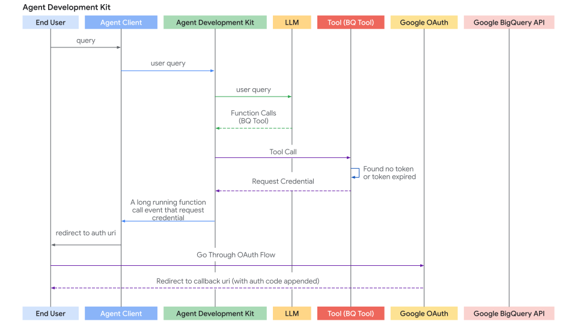

도구로 인증¶
많은 도구는 보호된 리소스(예: Google 캘린더의 사용자 데이터, Salesforce 레코드 등)에 액세스해야 하며 인증이 필요합니다. ADK는 다양한 인증 방법을 안전하게 처리하는 시스템을 제공합니다.
관련된 주요 구성 요소는 다음과 같습니다.
AuthScheme: API가 인증 자격 증명을 예상하는 방법을 정의합니다(예: 헤더의 API 키, OAuth 2.0 전달자 토큰). ADK는 OpenAPI 3.0과 동일한 유형의 인증 체계를 지원합니다. 각 자격 증명 유형에 대한 자세한 내용은 OpenAPI 문서: 인증을 참조하십시오. ADK는APIKey,HTTPBearer,OAuth2,OpenIdConnectWithConfig와 같은 특정 클래스를 사용합니다.AuthCredential: 인증 프로세스를 시작하는 데 필요한 초기 정보를 보유합니다(예: 애플리케이션의 OAuth 클라이언트 ID/시크릿, API 키 값). 자격 증명 유형을 지정하는auth_type(예:API_KEY,OAUTH2,SERVICE_ACCOUNT)을 포함합니다.
일반적인 흐름은 도구를 구성할 때 이러한 세부 정보를 제공하는 것입니다. 그런 다음 ADK는 도구가 API를 호출하기 전에 초기 자격 증명을 사용 가능한 자격 증명(예: 액세스 토큰)으로 자동으로 교환하려고 시도합니다. 사용자 상호 작용이 필요한 흐름(예: OAuth 동의)의 경우 에이전트 클라이언트 애플리케이션과 관련된 특정 대화형 프로세스가 트리거됩니다.
지원되는 초기 자격 증명 유형¶
- API_KEY: 간단한 키/값 인증용. 일반적으로 교환이 필요하지 않습니다.
- HTTP: 기본 인증(교환에 권장/지원되지 않음) 또는 이미 얻은 전달자 토큰을 나타낼 수 있습니다. 전달자 토큰인 경우 교환이 필요하지 않습니다.
- OAUTH2: 표준 OAuth 2.0 흐름용. 구성(클라이언트 ID, 시크릿, 범위)이 필요하며 종종 사용자 동의를 위한 대화형 흐름을 트리거합니다.
- OPEN_ID_CONNECT: OpenID Connect 기반 인증용. OAuth2와 유사하며 종종 구성 및 사용자 상호 작용이 필요합니다.
- SERVICE_ACCOUNT: Google Cloud 서비스 계정 자격 증명(JSON 키 또는 애플리케이션 기본 자격 증명)용. 일반적으로 전달자 토큰으로 교환됩니다.
도구에서 인증 구성¶
도구를 정의할 때 인증을 설정합니다.
-
RestApiTool / OpenAPIToolset: 초기화 중에
auth_scheme및auth_credential전달 -
GoogleApiToolSet 도구: ADK에는 Google 캘린더, BigQuery 등과 같은 기본 제공 1st 파티 도구가 있습니다. 도구 세트의 특정 메서드를 사용하십시오.
-
APIHubToolset / ApplicationIntegrationToolset: API 허브에서 관리되거나 애플리케이션 통합에서 제공하는 API에 인증이 필요한 경우 초기화 중에
auth_scheme및auth_credential을 전달합니다.
경고
액세스 토큰 및 특히 새로 고침 토큰과 같은 민감한 자격 증명을 세션 상태에 직접 저장하면 세션 스토리지 백엔드(SessionService) 및 전체 애플리케이션 보안 상태에 따라 보안 위험이 발생할 수 있습니다.
InMemorySessionService: 테스트 및 개발에 적합하지만 프로세스가 종료되면 데이터가 손실됩니다. 일시적이므로 위험이 적습니다.- 데이터베이스/영구 스토리지: 강력한 암호화 라이브러리(예:
cryptography)를 사용하여 데이터베이스에 저장하기 전에 토큰 데이터를 암호화하고 암호화 키를 안전하게 관리(예: 키 관리 서비스 사용)하는 것을 강력히 고려하십시오. - 보안 비밀 저장소: 프로덕션 환경의 경우 전용 비밀 관리자(예: Google Cloud Secret Manager 또는 HashiCorp Vault)에 민감한 자격 증명을 저장하는 것이 가장 권장되는 접근 방식입니다. 도구는 잠재적으로 세션 상태에 단기 액세스 토큰 또는 보안 참조(새로 고침 토큰 자체는 아님)만 저장하고 필요할 때 보안 저장소에서 필요한 비밀을 가져올 수 있습니다.
여정 1: 인증된 도구를 사용한 에이전트 애플리케이션 구축¶
이 섹션에서는 에이전트 애플리케이션 내에서 인증이 필요한 기존 도구(예: RestApiTool/ OpenAPIToolset, APIHubToolset, GoogleApiToolSet의 도구)를 사용하는 데 중점을 둡니다. 주요 책임은 도구를 구성하고 대화형 인증 흐름의 클라이언트 측 부분(도구에서 필요한 경우)을 처리하는 것입니다.
1. 인증으로 도구 구성¶
인증된 도구를 에이전트에 추가할 때 필요한 AuthScheme과 애플리케이션의 초기 AuthCredential을 제공해야 합니다.
A. OpenAPI 기반 도구 세트 사용(OpenAPIToolset, APIHubToolset 등)
도구 세트 초기화 중에 스키마와 자격 증명을 전달합니다. 도구 세트는 생성된 모든 도구에 이를 적용합니다. 다음은 ADK에서 인증으로 도구를 만드는 몇 가지 방법입니다.
API 키가 필요한 도구를 만듭니다.
from google.adk.tools.openapi_tool.auth.auth_helpers import token_to_scheme_credential
from google.adk.tools.openapi_tool.openapi_spec_parser.openapi_toolset import OpenAPIToolset
auth_scheme, auth_credential = token_to_scheme_credential(
"apikey", "query", "apikey", "YOUR_API_KEY_STRING"
)
sample_api_toolset = OpenAPIToolset(
spec_str="...", # OpenAPI 사양 문자열로 채웁니다.
spec_str_type="yaml",
auth_scheme=auth_scheme,
auth_credential=auth_credential,
)
OAuth2가 필요한 도구를 만듭니다.
from google.adk.tools.openapi_tool.openapi_spec_parser.openapi_toolset import OpenAPIToolset
from fastapi.openapi.models import OAuth2
from fastapi.openapi.models import OAuthFlowAuthorizationCode
from fastapi.openapi.models import OAuthFlows
from google.adk.auth import AuthCredential
from google.adk.auth import AuthCredentialTypes
from google.adk.auth import OAuth2Auth
auth_scheme = OAuth2(
flows=OAuthFlows(
authorizationCode=OAuthFlowAuthorizationCode(
authorizationUrl="https://accounts.google.com/o/oauth2/auth",
tokenUrl="https://oauth2.googleapis.com/token",
scopes={
"https://www.googleapis.com/auth/calendar": "캘린더 범위"
},
)
)
)
auth_credential = AuthCredential(
auth_type=AuthCredentialTypes.OAUTH2,
oauth2=OAuth2Auth(
client_id=YOUR_OAUTH_CLIENT_ID,
client_secret=YOUR_OAUTH_CLIENT_SECRET
),
)
calendar_api_toolset = OpenAPIToolset(
spec_str=google_calendar_openapi_spec_str, # openapi 사양으로 채웁니다.
spec_str_type='yaml',
auth_scheme=auth_scheme,
auth_credential=auth_credential,
)
서비스 계정이 필요한 도구를 만듭니다.
from google.adk.tools.openapi_tool.auth.auth_helpers import service_account_dict_to_scheme_credential
from google.adk.tools.openapi_tool.openapi_spec_parser.openapi_toolset import OpenAPIToolset
service_account_cred = json.loads(service_account_json_str)
auth_scheme, auth_credential = service_account_dict_to_scheme_credential(
config=service_account_cred,
scopes=["https://www.googleapis.com/auth/cloud-platform"],
)
sample_toolset = OpenAPIToolset(
spec_str=sa_openapi_spec_str, # openapi 사양으로 채웁니다.
spec_str_type='json',
auth_scheme=auth_scheme,
auth_credential=auth_credential,
)
OpenID connect가 필요한 도구를 만듭니다.
from google.adk.auth.auth_schemes import OpenIdConnectWithConfig
from google.adk.auth.auth_credential import AuthCredential, AuthCredentialTypes, OAuth2Auth
from google.adk.tools.openapi_tool.openapi_spec_parser.openapi_toolset import OpenAPIToolset
auth_scheme = OpenIdConnectWithConfig(
authorization_endpoint=OAUTH2_AUTH_ENDPOINT_URL,
token_endpoint=OAUTH2_TOKEN_ENDPOINT_URL,
scopes=['openid', 'YOUR_OAUTH_SCOPES"]
)
auth_credential = AuthCredential(
auth_type=AuthCredentialTypes.OPEN_ID_CONNECT,
oauth2=OAuth2Auth(
client_id="...",
client_secret="...",
)
)
userinfo_toolset = OpenAPIToolset(
spec_str=content, # 실제 사양으로 채웁니다.
spec_str_type='yaml',
auth_scheme=auth_scheme,
auth_credential=auth_credential,
)
B. Google API 도구 세트 사용(예: calendar_tool_set)
이러한 도구 세트에는 종종 전용 구성 메서드가 있습니다.
팁: Google OAuth 클라이언트 ID 및 시크릿을 만드는 방법에 대한 자세한 내용은 다음 가이드를 참조하십시오. Google API 클라이언트 ID 가져오기
# 예: Google 캘린더 도구 구성
from google.adk.tools.google_api_tool import calendar_tool_set
client_id = "YOUR_GOOGLE_OAUTH_CLIENT_ID.apps.googleusercontent.com"
client_secret = "YOUR_GOOGLE_OAUTH_CLIENT_SECRET"
# 이 도구 세트 유형에 대한 특정 구성 메서드 사용
calendar_tool_set.configure_auth(
client_id=oauth_client_id, client_secret=oauth_client_secret
)
# agent = LlmAgent(..., tools=calendar_tool_set.get_tool('calendar_tool_set'))
인증 요청 흐름(도구가 인증 자격 증명을 요청하는 경우)의 시퀀스 다이어그램은 다음과 같습니다.

2. 대화형 OAuth/OIDC 흐름 처리(클라이언트 측)¶
도구에 사용자 로그인/동의(일반적으로 OAuth 2.0 또는 OIDC)가 필요한 경우 ADK 프레임워크는 실행을 일시 중지하고 에이전트 클라이언트 애플리케이션에 신호를 보냅니다. 두 가지 경우가 있습니다.
- 에이전트 클라이언트 애플리케이션은 동일한 프로세스에서
runner.run_async를 통해 에이전트를 직접 실행합니다. 예: UI 백엔드, CLI 앱 또는 Spark 작업 등 - 에이전트 클라이언트 애플리케이션은
/run또는/run_sse엔드포인트를 통해 ADK의 fastapi 서버와 상호 작용합니다. ADK의 fastapi 서버는 에이전트 클라이언트 애플리케이션과 동일한 서버 또는 다른 서버에 설정될 수 있습니다.
두 번째 경우는 /run 또는 /run_sse 엔드포인트도 runner.run_async를 호출하기 때문에 첫 번째 경우의 특수한 경우입니다. 유일한 차이점은 다음과 같습니다.
- 에이전트를 실행하기 위해 파이썬 함수를 호출할지(첫 번째 경우) 또는 에이전트를 실행하기 위해 서비스 엔드포인트를 호출할지(두 번째 경우).
- 결과 이벤트가 메모리 내 객체(첫 번째 경우)인지 또는 http 응답의 직렬화된 json 문자열(두 번째 경우)인지 여부.
아래 섹션에서는 첫 번째 경우에 중점을 두며 두 번째 경우에 대해 매우 간단하게 매핑할 수 있어야 합니다. 필요한 경우 두 번째 경우를 처리하기 위한 몇 가지 차이점도 설명합니다.
다음은 클라이언트 애플리케이션에 대한 단계별 프로세스입니다.
1단계: 에이전트 실행 및 인증 요청 감지
runner.run_async를 사용하여 에이전트 상호 작용을 시작합니다.- 생성된 이벤트를 반복합니다.
- 함수 호출에
adk_request_credential이라는 특수 이름이 있는 특정 함수 호출 이벤트를 찾습니다. 이 이벤트는 사용자 상호 작용이 필요함을 나타냅니다. 도우미 함수를 사용하여 이 이벤트를 식별하고 필요한 정보를 추출할 수 있습니다. (두 번째 경우 논리는 유사합니다. http 응답에서 이벤트를 역직렬화합니다.)
# runner = Runner(...)
# session = await session_service.create_session(...)
# content = types.Content(...) # 사용자의 초기 쿼리
print("\n에이전트 실행 중...")
events_async = runner.run_async(
session_id=session.id, user_id='user', new_message=content
)
auth_request_function_call_id, auth_config = None, None
async for event in events_async:
# 도우미를 사용하여 특정 인증 요청 이벤트 확인
if (auth_request_function_call := get_auth_request_function_call(event)):
print("--> 에이전트에서 인증 필요.")
# 나중에 응답하는 데 필요한 ID 저장
if not (auth_request_function_call_id := auth_request_function_call.id):
raise ValueError(f'함수 호출에서 함수 호출 ID를 가져올 수 없습니다: {auth_request_function_call}')
# auth_uri 등이 포함된 AuthConfig 가져오기
auth_config = get_auth_config(auth_request_function_call)
break # 지금은 이벤트 처리 중지, 사용자 상호 작용 필요
if not auth_request_function_call_id:
print("\n인증이 필요하지 않거나 에이전트가 완료되었습니다.")
# return # 또는 수신된 경우 최종 응답 처리
도우미 함수 helpers.py:
from google.adk.events import Event
from google.adk.auth import AuthConfig # 필요한 유형 가져오기
from google.genai import types
def get_auth_request_function_call(event: Event) -> types.FunctionCall:
# 이벤트에서 특수 인증 요청 함수 호출 가져오기
if not event.content or not event.content.parts:
return
for part in event.content.parts:
if (
part
and part.function_call
and part.function_call.name == 'adk_request_credential'
and event.long_running_tool_ids
and part.function_call.id in event.long_running_tool_ids
):
return part.function_call
def get_auth_config(auth_request_function_call: types.FunctionCall) -> AuthConfig:
# 인증 요청 함수 호출의 인수에서 AuthConfig 객체 추출
if not auth_request_function_call.args or not (auth_config := auth_request_function_call.args.get('authConfig')):
raise ValueError(f'함수 호출에서 인증 구성을 가져올 수 없습니다: {auth_request_function_call}')
if isinstance(auth_config, dict):
auth_config = AuthConfig.model_validate(auth_config)
elif not isinstance(auth_config, AuthConfig):
raise ValueError(f'인증 구성 {auth_config}이(가) AuthConfig의 인스턴스가 아닙니다.')
return auth_config
2단계: 승인을 위해 사용자 리디렉션
- 이전 단계에서 추출한
auth_config에서 승인 URL(auth_uri)을 가져옵니다. - 중요하게, 애플리케이션의
redirect_uri를 이auth_uri에 쿼리 매개변수로 추가합니다. 이redirect_uri는 OAuth 공급자(예: Google Cloud Console, Okta 관리 콘솔)에 미리 등록되어 있어야 합니다. - 사용자를 이 전체 URL로 안내합니다(예: 브라우저에서 엽니다).
# (인증 필요 감지 후 계속)
if auth_request_function_call_id and auth_config:
# AuthConfig에서 기본 승인 URL 가져오기
base_auth_uri = auth_config.exchanged_auth_credential.oauth2.auth_uri
if base_auth_uri:
redirect_uri = 'http://localhost:8000/callback' # OAuth 클라이언트 앱 구성과 일치해야 함
# redirect_uri 추가(프로덕션에서는 urlencode 사용)
auth_request_uri = base_auth_uri + f'&redirect_uri={redirect_uri}'
# 이제 최종 사용자를 이 auth_request_uri로 리디렉션하거나 브라우저에서 이 auth_request_uri를 열도록 요청해야 합니다.
# 이 auth_request_uri는 해당 인증 공급자에서 제공해야 하며 최종 사용자는 로그인하고 애플리케이션이 데이터에 액세스하도록 승인해야 합니다.
# 그런 다음 인증 공급자는 최종 사용자를 제공한 redirect_uri로 리디렉션합니다.
# 다음 단계: 사용자(또는 웹 서버 처리기)로부터 이 콜백 URL 가져오기
else:
print("오류: auth_config에서 인증 URI를 찾을 수 없습니다.")
# 오류 처리
3단계. 리디렉션 콜백 처리(클라이언트):
- 애플리케이션에는 사용자가 공급자로 애플리케이션을 승인한 후 사용자를 수신하는 메커니즘(예:
redirect_uri의 웹 서버 경로)이 있어야 합니다. - 공급자는 사용자를
redirect_uri로 리디렉션하고authorization_code(및 잠재적으로state,scope)를 URL에 쿼리 매개변수로 추가합니다. - 이 들어오는 요청에서 전체 콜백 URL을 캡처합니다.
- (이 단계는 기본 에이전트 실행 루프 외부, 웹 서버 또는 동등한 콜백 처리기에서 발생합니다.)
4단계. 인증 결과를 ADK로 다시 보내기(클라이언트):
- 전체 콜백 URL(승인 코드가 포함됨)이 있으면 클라이언트 1단계에서 저장한
auth_request_function_call_id및auth_config객체를 검색합니다. - 캡처된 콜백 URL을
exchanged_auth_credential.oauth2.auth_response_uri필드에 설정합니다. 또한exchanged_auth_credential.oauth2.redirect_uri에 사용한 리디렉션 URI가 포함되어 있는지 확인합니다. types.FunctionResponse가 포함된types.Part가 포함된types.Content객체를 만듭니다.name을"adk_request_credential"로 설정합니다. (참고: 이것은 ADK가 인증을 진행하기 위한 특수 이름입니다. 다른 이름을 사용하지 마십시오.)id를 저장한auth_request_function_call_id로 설정합니다.response를 직렬화된(예:.model_dump()) 업데이트된AuthConfig객체로 설정합니다.
- 이
FunctionResponse콘텐츠를new_message로 전달하여 동일한 세션에 대해runner.run_async를 다시 호출합니다.
# (사용자 상호 작용 후 계속)
# 콜백 URL 가져오기 시뮬레이션(예: 사용자 붙여넣기 또는 웹 처리기에서)
auth_response_uri = await get_user_input(
f'전체 콜백 URL을 여기에 붙여넣으세요:\n> '
)
auth_response_uri = auth_response_uri.strip() # 입력 정리
if not auth_response_uri:
print("콜백 URL이 제공되지 않았습니다. 중단합니다.")
return
# 수신된 AuthConfig를 콜백 세부 정보로 업데이트
auth_config.exchanged_auth_credential.oauth2.auth_response_uri = auth_response_uri
# 토큰 교환에 필요할 수 있으므로 사용된 redirect_uri도 포함
auth_config.exchanged_auth_credential.oauth2.redirect_uri = redirect_uri
# FunctionResponse Content 객체 구성
auth_content = types.Content(
role='user', # FunctionResponse를 보낼 때 역할은 'user'일 수 있습니다.
parts=[
types.Part(
function_response=types.FunctionResponse(
id=auth_request_function_call_id, # 원래 요청에 대한 링크
name='adk_request_credential', # 특수 프레임워크 함수 이름
response=auth_config.model_dump() # *업데이트된* AuthConfig 다시 보내기
)
)
],
)
# --- 실행 재개 ---
print("\n인증 세부 정보를 에이전트로 다시 제출 중...")
events_async_after_auth = runner.run_async(
session_id=session.id,
user_id='user',
new_message=auth_content, # FunctionResponse 다시 보내기
)
# --- 최종 에이전트 출력 처리 ---
print("\n--- 인증 후 에이전트 응답 ---")
async for event in events_async_after_auth:
# 이제 도구 호출이 성공할 것으로 예상하면서 이벤트를 정상적으로 처리
print(event) # 검사를 위해 전체 이벤트 인쇄
참고: 재개 기능이 있는 인증 응답
ADK 에이전트 워크플로가
재개 기능으로 구성된 경우 인증
응답과 함께 호출 ID(invocation_id) 매개변수도 포함해야 합니다.
제공하는 호출 ID는 인증 요청을 생성한 것과 동일한
호출이어야 합니다. 그렇지 않으면 시스템이 인증 응답으로 새 호출을 시작합니다.
에이전트가 재개 기능을 사용하는 경우 인증 응답에 포함될 수 있도록
인증 요청과 함께 호출 ID를 매개변수로 포함하는 것을 고려하십시오.
재개 기능 사용에 대한 자세한 내용은
중지된 에이전트 재개를 참조하십시오.
5단계: ADK가 토큰 교환 및 도구 재시도를 처리하고 도구 결과를 가져옵니다.
- ADK는
adk_request_credential에 대한FunctionResponse를 수신합니다. - 업데이트된
AuthConfig의 정보(코드가 포함된 콜백 URL 포함)를 사용하여 공급자의 토큰 엔드포인트와 OAuth 토큰 교환을 수행하여 액세스 토큰(및 잠재적으로 새로 고침 토큰)을 얻습니다. - ADK는 내부적으로 세션 상태에 설정하여 이러한 토큰을 사용할 수 있도록 합니다.
- ADK는 원래 도구 호출(처음에 인증 누락으로 실패한 호출)을 자동으로 재시도합니다.
- 이번에는 도구가 유효한 토큰(
tool_context.get_auth_response()를 통해)을 찾아 인증된 API 호출을 성공적으로 실행합니다. - 에이전트는 도구에서 실제 결과를 수신하고 사용자에게 최종 응답을 생성합니다.
인증 응답 흐름(에이전트 클라이언트가 인증 응답을 다시 보내고 ADK가 도구 호출을 재시도하는 경우)의 시퀀스 다이어그램은 다음과 같습니다.

여정 2: 인증이 필요한 사용자 지정 도구(FunctionTool) 구축¶
이 섹션에서는 새 ADK 도구를 만들 때 사용자 지정 Python 함수 내부에서 인증 논리를 구현하는 데 중점을 둡니다. 예제로 FunctionTool을 구현합니다.
전제 조건¶
함수 서명에는 tool_context: ToolContext가 반드시 포함되어야 합니다. ADK는 이 객체를 자동으로 주입하여 상태 및 인증 메커니즘에 대한 액세스를 제공합니다.
from google.adk.tools import FunctionTool, ToolContext
from typing import Dict
def my_authenticated_tool_function(param1: str, ..., tool_context: ToolContext) -> dict:
# ... 로직 ...
pass
my_tool = FunctionTool(func=my_authenticated_tool_function)
도구 함수 내 인증 논리¶
함수 내에서 다음 단계를 구현합니다.
1단계: 캐시되고 유효한 자격 증명 확인:
도구 함수 내에서 먼저 이 세션의 이전 실행에서 유효한 자격 증명(예: 액세스/새로 고침 토큰)이 이미 저장되어 있는지 확인합니다. 현재 세션에 대한 자격 증명은 tool_context.invocation_context.session.state(상태 사전)에 저장해야 합니다. tool_context.invocation_context.session.state.get(credential_name, None)을 확인하여 기존 자격 증명의 존재 여부를 확인합니다.
from google.oauth2.credentials import Credentials
from google.auth.transport.requests import Request
# 도구 함수 내부
TOKEN_CACHE_KEY = "my_tool_tokens" # 고유한 키 선택
SCOPES = ["scope1", "scope2"] # 필요한 범위 정의
creds = None
cached_token_info = tool_context.state.get(TOKEN_CACHE_KEY)
if cached_token_info:
try:
creds = Credentials.from_authorized_user_info(cached_token_info, SCOPES)
if not creds.valid and creds.expired and creds.refresh_token:
creds.refresh(Request())
tool_context.state[TOKEN_CACHE_KEY] = json.loads(creds.to_json()) # 캐시 업데이트
elif not creds.valid:
creds = None # 유효하지 않음, 재인증 필요
tool_context.state[TOKEN_CACHE_KEY] = None
except Exception as e:
print(f"캐시된 자격 증명 로드/새로 고침 오류: {e}")
creds = None
tool_context.state[TOKEN_CACHE_KEY] = None
if creds and creds.valid:
# 5단계로 건너뛰기: 인증된 API 호출하기
pass
else:
# 2단계로 진행...
pass
2단계: 클라이언트의 인증 응답 확인
- 1단계에서 유효한 자격 증명을 얻지 못한 경우
exchanged_credential = tool_context.get_auth_response()를 호출하여 클라이언트가 대화형 흐름을 방금 완료했는지 확인합니다. - 그러면 클라이언트가 다시 보낸 업데이트된
exchanged_credential객체(콜백 URL이auth_response_uri에 포함됨)가 반환됩니다.
# 도구에 구성된 auth_scheme 및 auth_credential 사용.
# exchanged_credential: AuthCredential | None
exchanged_credential = tool_context.get_auth_response(AuthConfig(
auth_scheme=auth_scheme,
raw_auth_credential=auth_credential,
))
# exchanged_credential이 None이 아니면 인증 응답에서 이미 교환된 자격 증명이 있습니다.
if exchanged_credential:
# ADK가 이미 액세스 토큰을 교환했습니다.
access_token = exchanged_credential.oauth2.access_token
refresh_token = exchanged_credential.oauth2.refresh_token
creds = Credentials(
token=access_token,
refresh_token=refresh_token,
token_uri=auth_scheme.flows.authorizationCode.tokenUrl,
client_id=auth_credential.oauth2.client_id,
client_secret=auth_credential.oauth2.client_secret,
scopes=list(auth_scheme.flows.authorizationCode.scopes.keys()),
)
# 세션 상태에 토큰을 캐시하고 API를 호출하고 5단계로 건너뜁니다.
3단계: 인증 요청 시작
유효한 자격 증명(1단계)과 인증 응답(2단계)이 없는 경우 도구는 OAuth 흐름을 시작해야 합니다. AuthScheme 및 초기 AuthCredential을 정의하고 tool_context.request_credential()을 호출합니다. 인증이 필요함을 나타내는 응답을 반환합니다.
# 도구에 구성된 auth_scheme 및 auth_credential 사용.
tool_context.request_credential(AuthConfig(
auth_scheme=auth_scheme,
raw_auth_credential=auth_credential,
))
return {'pending': true, 'message': '사용자 인증 대기 중.'}
# request_credential을 설정하면 ADK는 보류 중인 인증 이벤트를 감지합니다. 실행을 일시 중지하고 최종 사용자에게 로그인을 요청합니다.
4단계: 승인 코드를 토큰으로 교환
ADK는 자동으로 oauth 승인 URL을 생성하여 에이전트 클라이언트 애플리케이션에 제공합니다. 에이전트 클라이언트 애플리케이션은 여정 1에서 설명한 것과 동일한 방식으로 사용자를 승인 URL로 리디렉션해야 합니다(redirect_uri가 추가됨). 사용자가 승인 URL에 따라 로그인 흐름을 완료하고 ADK가 에이전트 클라이언트 애플리케이션에서 인증 콜백 URL을 추출하면 자동으로 인증 코드를 구문 분석하고 인증 토큰을 생성합니다. 다음 도구 호출에서 2단계의 tool_context.get_auth_response에는 후속 API 호출에 사용할 유효한 자격 증명이 포함됩니다.
5단계: 획득한 자격 증명 캐시
ADK에서 토큰을 성공적으로 획득한 후(2단계) 또는 토큰이 여전히 유효한 경우(1단계), 즉시 새 Credentials 객체를 tool_context.state(직렬화됨, 예: JSON)에 캐시 키를 사용하여 저장합니다.
# 도구 함수 내부, 'creds'를 얻은 후(새로 고침되었거나 새로 교환됨)
# 새/새로 고침된 토큰 캐시
tool_context.state[TOKEN_CACHE_KEY] = json.loads(creds.to_json())
print(f"DEBUG: 키 아래에 캐시/업데이트된 토큰: {TOKEN_CACHE_KEY}")
# 6단계로 진행(API 호출하기)
6단계: 인증된 API 호출하기
- 유효한
Credentials객체(creds1단계 또는 4단계)가 있으면 적절한 클라이언트 라이브러리(예:googleapiclient,requests)를 사용하여 보호된 API에 대한 실제 호출을 수행합니다.credentials=creds인수를 전달합니다. - 특히
HttpError401/403에 대한 오류 처리를 포함합니다. 이는 토큰이 만료되었거나 호출 사이에 해지되었음을 의미할 수 있습니다. 이러한 오류가 발생하면 캐시된 토큰(tool_context.state.pop(...))을 지우고 잠재적으로auth_required상태를 다시 반환하여 재인증을 강제하는 것을 고려하십시오.
# 도구 함수 내부, 유효한 'creds' 객체 사용
# 진행하기 전에 creds가 유효한지 확인
if not creds or not creds.valid:
return {"status": "error", "error_message": "유효한 자격 증명 없이 진행할 수 없습니다."}
try:
service = build("calendar", "v3", credentials=creds) # 예
api_result = service.events().list(...).execute()
# 7단계로 진행
except Exception as e:
# API 오류 처리(예: 401/403 확인, 캐시 지우기 및 인증 재요청)
print(f"오류: API 호출 실패: {e}")
return {"status": "error", "error_message": f"API 호출 실패: {e}"}
7단계: 도구 결과 반환
- API 호출이 성공하면 결과를 LLM에 유용한 사전 형식으로 처리합니다.
- 중요하게, 데이터와 함께 를 포함합니다.
# 도구 함수 내부, API 호출 성공 후
processed_result = [...] # LLM에 대한 api_result 처리
return {"status": "success", "data": processed_result}
전체 코드
import os
from google.adk.auth.auth_schemes import OpenIdConnectWithConfig
from google.adk.auth.auth_credential import AuthCredential, AuthCredentialTypes, OAuth2Auth
from google.adk.tools.openapi_tool.openapi_spec_parser.openapi_toolset import OpenAPIToolset
from google.adk.agents.llm_agent import LlmAgent
# --- Authentication Configuration ---
# This section configures how the agent will handle authentication using OpenID Connect (OIDC),
# often layered on top of OAuth 2.0.
# Define the Authentication Scheme using OpenID Connect.
# This object tells the ADK *how* to perform the OIDC/OAuth2 flow.
# It requires details specific to your Identity Provider (IDP), like Google OAuth, Okta, Auth0, etc.
# Note: Replace the example Okta URLs and credentials with your actual IDP details.
# All following fields are required, and available from your IDP.
auth_scheme = OpenIdConnectWithConfig(
# The URL of the IDP's authorization endpoint where the user is redirected to log in.
authorization_endpoint="https://your-endpoint.okta.com/oauth2/v1/authorize",
# The URL of the IDP's token endpoint where the authorization code is exchanged for tokens.
token_endpoint="https://your-token-endpoint.okta.com/oauth2/v1/token",
# The scopes (permissions) your application requests from the IDP.
# 'openid' is standard for OIDC. 'profile' and 'email' request user profile info.
scopes=['openid', 'profile', "email"]
)
# Define the Authentication Credentials for your specific application.
# This object holds the client identifier and secret that your application uses
# to identify itself to the IDP during the OAuth2 flow.
# !! SECURITY WARNING: Avoid hardcoding secrets in production code. !!
# !! Use environment variables or a secret management system instead. !!
auth_credential = AuthCredential(
auth_type=AuthCredentialTypes.OPEN_ID_CONNECT,
oauth2=OAuth2Auth(
client_id="CLIENT_ID",
client_secret="CIENT_SECRET",
)
)
# --- Toolset Configuration from OpenAPI Specification ---
# This section defines a sample set of tools the agent can use, configured with Authentication
# from steps above.
# This sample set of tools use endpoints protected by Okta and requires an OpenID Connect flow
# to acquire end user credentials.
with open(os.path.join(os.path.dirname(__file__), 'spec.yaml'), 'r') as f:
spec_content = f.read()
userinfo_toolset = OpenAPIToolset(
spec_str=spec_content,
spec_str_type='yaml',
# ** Crucially, associate the authentication scheme and credentials with these tools. **
# This tells the ADK that the tools require the defined OIDC/OAuth2 flow.
auth_scheme=auth_scheme,
auth_credential=auth_credential,
)
# --- Agent Configuration ---
# Configure and create the main LLM Agent.
root_agent = LlmAgent(
model='gemini-2.0-flash',
name='enterprise_assistant',
instruction='Help user integrate with multiple enterprise systems, including retrieving user information which may require authentication.',
tools=userinfo_toolset.get_tools(),
)
# --- Ready for Use ---
# The `root_agent` is now configured with tools protected by OIDC/OAuth2 authentication.
# When the agent attempts to use one of these tools, the ADK framework will automatically
# trigger the authentication flow defined by `auth_scheme` and `auth_credential`
# if valid credentials are not already available in the session.
# The subsequent interaction flow would guide the user through the login process and handle
# token exchanging, and automatically attach the exchanged token to the endpoint defined in
# the tool.
import asyncio
from dotenv import load_dotenv
from google.adk.artifacts.in_memory_artifact_service import InMemoryArtifactService
from google.adk.runners import Runner
from google.adk.sessions import InMemorySessionService
from google.genai import types
from .helpers import is_pending_auth_event, get_function_call_id, get_function_call_auth_config, get_user_input
from .tools_and_agent import root_agent
load_dotenv()
agent = root_agent
async def async_main():
"""
Main asynchronous function orchestrating the agent interaction and authentication flow.
"""
# --- Step 1: Service Initialization ---
# Use in-memory services for session and artifact storage (suitable for demos/testing).
session_service = InMemorySessionService()
artifacts_service = InMemoryArtifactService()
# Create a new user session to maintain conversation state.
session = session_service.create_session(
state={}, # Optional state dictionary for session-specific data
app_name='my_app', # Application identifier
user_id='user' # User identifier
)
# --- Step 2: Initial User Query ---
# Define the user's initial request.
query = 'Show me my user info'
print(f"user: {query}")
# Format the query into the Content structure expected by the ADK Runner.
content = types.Content(role='user', parts=[types.Part(text=query)])
# Initialize the ADK Runner
runner = Runner(
app_name='my_app',
agent=agent,
artifact_service=artifacts_service,
session_service=session_service,
)
# --- Step 3: Send Query and Handle Potential Auth Request ---
print("\nRunning agent with initial query...")
events_async = runner.run_async(
session_id=session.id, user_id='user', new_message=content
)
# Variables to store details if an authentication request occurs.
auth_request_event_id, auth_config = None, None
# Iterate through the events generated by the first run.
async for event in events_async:
# Check if this event is the specific 'adk_request_credential' function call.
if is_pending_auth_event(event):
print("--> Authentication required by agent.")
auth_request_event_id = get_function_call_id(event)
auth_config = get_function_call_auth_config(event)
# Once the auth request is found and processed, exit this loop.
# We need to pause execution here to get user input for authentication.
break
# If no authentication request was detected after processing all events, exit.
if not auth_request_event_id or not auth_config:
print("\nAuthentication not required for this query or processing finished.")
return # Exit the main function
# --- Step 4: Manual Authentication Step (Simulated OAuth 2.0 Flow) ---
# This section simulates the user interaction part of an OAuth 2.0 flow.
# In a real web application, this would involve browser redirects.
# Define the Redirect URI. This *must* match one of the URIs registered
# with the OAuth provider for your application. The provider sends the user
# back here after they approve the request.
redirect_uri = 'http://localhost:8000/dev-ui' # Example for local development
# Construct the Authorization URL that the user must visit.
# This typically includes the provider's authorization endpoint URL,
# client ID, requested scopes, response type (e.g., 'code'), and the redirect URI.
# Here, we retrieve the base authorization URI from the AuthConfig provided by ADK
# and append the redirect_uri.
# NOTE: A robust implementation would use urlencode and potentially add state, scope, etc.
auth_request_uri = (
auth_config.exchanged_auth_credential.oauth2.auth_uri
+ f'&redirect_uri={redirect_uri}' # Simple concatenation; ensure correct query param format
)
print("\n--- User Action Required ---")
# Prompt the user to visit the authorization URL, log in, grant permissions,
# and then paste the *full* URL they are redirected back to (which contains the auth code).
auth_response_uri = await get_user_input(
f'1. Please open this URL in your browser to log in:\n {auth_request_uri}\n\n'
f'2. After successful login and authorization, your browser will be redirected.\n'
f' Copy the *entire* URL from the browser\'s address bar.\n\n'
f'3. Paste the copied URL here and press Enter:\n\n> '
)
# --- Step 5: Prepare Authentication Response for the Agent ---
# Update the AuthConfig object with the information gathered from the user.
# The ADK framework needs the full response URI (containing the code)
# and the original redirect URI to complete the OAuth token exchange process internally.
auth_config.exchanged_auth_credential.oauth2.auth_response_uri = auth_response_uri
auth_config.exchanged_auth_credential.oauth2.redirect_uri = redirect_uri
# Construct a FunctionResponse Content object to send back to the agent/runner.
# This response explicitly targets the 'adk_request_credential' function call
# identified earlier by its ID.
auth_content = types.Content(
role='user',
parts=[
types.Part(
function_response=types.FunctionResponse(
# Crucially, link this response to the original request using the saved ID.
id=auth_request_event_id,
# The special name of the function call we are responding to.
name='adk_request_credential',
# The payload containing all necessary authentication details.
response=auth_config.model_dump(),
)
)
],
)
# --- Step 6: Resume Execution with Authentication ---
print("\nSubmitting authentication details back to the agent...")
# Run the agent again, this time providing the `auth_content` (FunctionResponse).
# The ADK Runner intercepts this, processes the 'adk_request_credential' response
# (performs token exchange, stores credentials), and then allows the agent
# to retry the original tool call that required authentication, now succeeding with
# a valid access token embedded.
events_async = runner.run_async(
session_id=session.id,
user_id='user',
new_message=auth_content, # Provide the prepared auth response
)
# Process and print the final events from the agent after authentication is complete.
# This stream now contain the actual result from the tool (e.g., the user info).
print("\n--- Agent Response after Authentication ---")
async for event in events_async:
print(event)
if __name__ == '__main__':
asyncio.run(async_main())
from google.adk.auth import AuthConfig
from google.adk.events import Event
import asyncio
# --- Helper Functions ---
async def get_user_input(prompt: str) -> str:
"""
Asynchronously prompts the user for input in the console.
Uses asyncio's event loop and run_in_executor to avoid blocking the main
asynchronous execution thread while waiting for synchronous `input()`.
Args:
prompt: The message to display to the user.
Returns:
The string entered by the user.
"""
loop = asyncio.get_event_loop()
# Run the blocking `input()` function in a separate thread managed by the executor.
return await loop.run_in_executor(None, input, prompt)
def is_pending_auth_event(event: Event) -> bool:
"""
Checks if an ADK Event represents a request for user authentication credentials.
The ADK framework emits a specific function call ('adk_request_credential')
when a tool requires authentication that hasn't been previously satisfied.
Args:
event: The ADK Event object to inspect.
Returns:
True if the event is an 'adk_request_credential' function call, False otherwise.
"""
# Safely checks nested attributes to avoid errors if event structure is incomplete.
return (
event.content
and event.content.parts
and event.content.parts[0] # Assuming the function call is in the first part
and event.content.parts[0].function_call
# The specific function name indicating an auth request from the ADK framework.
and event.content.parts[0].function_call.name == 'adk_request_credential'
)
def get_function_call_id(event: Event) -> str:
"""
Extracts the unique ID of the function call from an ADK Event.
This ID is crucial for correlating a function *response* back to the specific
function *call* that the agent initiated to request for auth credentials.
Args:
event: The ADK Event object containing the function call.
Returns:
The unique identifier string of the function call.
Raises:
ValueError: If the function call ID cannot be found in the event structure.
(Corrected typo from `contents` to `content` below)
"""
# Navigate through the event structure to find the function call ID.
if (
event
and event.content
and event.content.parts
and event.content.parts[0] # Use content, not contents
and event.content.parts[0].function_call
and event.content.parts[0].function_call.id
):
return event.content.parts[0].function_call.id
# If the ID is missing, raise an error indicating an unexpected event format.
raise ValueError(f'Cannot get function call id from event {event}')
def get_function_call_auth_config(event: Event) -> AuthConfig:
"""
Extracts the authentication configuration details from an 'adk_request_credential' event.
Client should use this AuthConfig to necessary authentication details (like OAuth codes and state)
and sent it back to the ADK to continue OAuth token exchanging.
Args:
event: The ADK Event object containing the 'adk_request_credential' call.
Returns:
An AuthConfig object populated with details from the function call arguments.
Raises:
ValueError: If the 'auth_config' argument cannot be found in the event.
(Corrected typo from `contents` to `content` below)
"""
if (
event
and event.content
and event.content.parts
and event.content.parts[0] # Use content, not contents
and event.content.parts[0].function_call
and event.content.parts[0].function_call.args
and event.content.parts[0].function_call.args.get('auth_config')
):
# Reconstruct the AuthConfig object using the dictionary provided in the arguments.
# The ** operator unpacks the dictionary into keyword arguments for the constructor.
return AuthConfig(
**event.content.parts[0].function_call.args.get('auth_config')
)
raise ValueError(f'Cannot get auth config from event {event}')
openapi: 3.0.1
info:
title: Okta 사용자 정보 API
version: 1.0.0
description: |-
유효한 Okta OIDC 액세스 토큰을 기반으로 사용자 프로필 정보를 검색하는 API입니다.
인증은 Okta를 사용하는 OpenID Connect를 통해 처리됩니다.
contact:
name: API 지원
email: support@example.com # 사용 가능한 경우 실제 연락처로 교체
servers:
- url: <서버 이름으로 대체>
description: 프로덕션 환경
paths:
/okta-jwt-user-api:
get:
summary: 인증된 사용자 정보 가져오기
description: |-
사용자의 프로필 세부 정보를 가져옵니다.
operationId: getUserInfo
tags:
- 사용자 프로필
security:
- okta_oidc:
- openid
- email
- profile
responses:
'200':
description: 사용자 정보를 성공적으로 검색했습니다.
content:
application/json:
schema:
type: object
properties:
sub:
type: string
description: 사용자의 주체 식별자입니다.
example: "abcdefg"
name:
type: string
description: 사용자의 전체 이름입니다.
example: "예제 성"
locale:
type: string
description: 사용자의 로캘(예: en-US 또는 en_US)입니다.
example: "en_US"
email:
type: string
format: email
description: 사용자의 기본 이메일 주소입니다.
example: "username@example.com"
preferred_username:
type: string
description: 사용자의 기본 사용자 이름(종종 이메일)입니다.
example: "username@example.com"
given_name:
type: string
description: 사용자의 이름(이름)입니다.
example: "예제"
family_name:
type: string
description: 사용자의 성(성)입니다.
example: "성"
zoneinfo:
type: string
description: 사용자의 시간대(예: America/Los_Angeles)입니다.
example: "America/Los_Angeles"
updated_at:
type: integer
format: int64 # Unix 타임스탬프에 int64 사용
description: 사용자의 프로필이 마지막으로 업데이트된 타임스탬프(Unix 에포크 시간)입니다.
example: 1743617719
email_verified:
type: boolean
description: 사용자의 이메일 주소가 확인되었는지 여부를 나타냅니다.
example: true
required:
- sub
- name
- locale
- email
- preferred_username
- given_name
- family_name
- zoneinfo
- updated_at
- email_verified
'401':
description: 권한 없음. 제공된 전달자 토큰이 없거나, 유효하지 않거나, 만료되었습니다.
content:
application/json:
schema:
$ref: '#/components/schemas/Error'
'403':
description: 금지됨. 제공된 토큰에 이 리소스에 액세스하는 데 필요한 범위 또는 권한이 없습니다.
content:
application/json:
schema:
$ref: '#/components/schemas/Error'
components:
securitySchemes:
okta_oidc:
type: openIdConnect
description: OpenID Connect를 사용하는 Okta를 통한 인증. 전달자 액세스 토큰이 필요합니다.
openIdConnectUrl: https://your-endpoint.okta.com/.well-known/openid-configuration
schemas:
Error:
type: object
properties:
code:
type: string
description: 오류 코드입니다.
message:
type: string
description: 사람이 읽을 수 있는 오류 메시지입니다.
required:
- code
- message